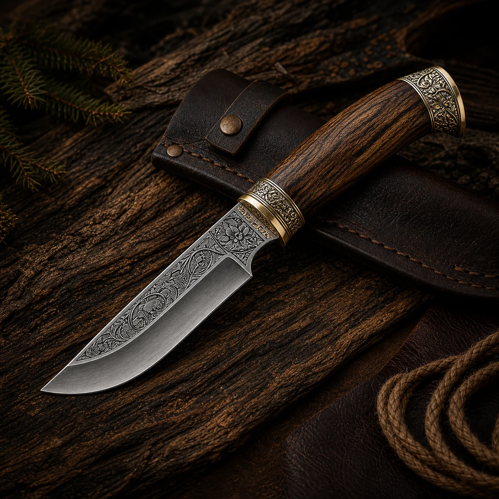
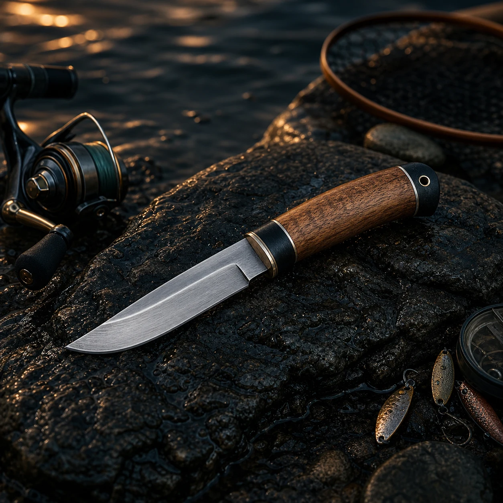
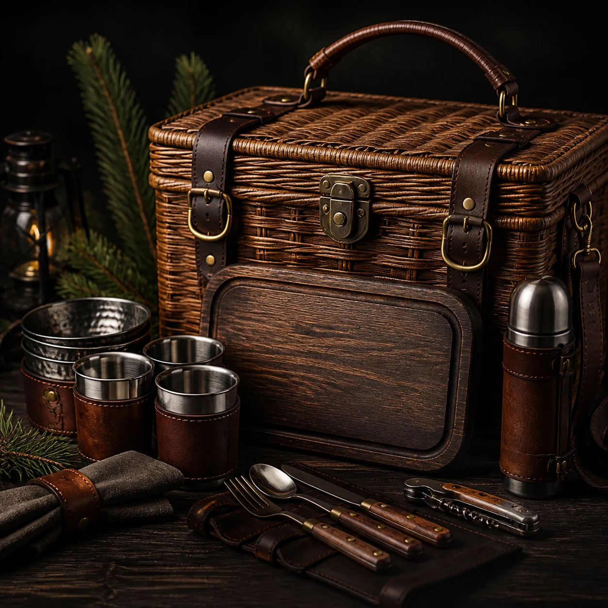
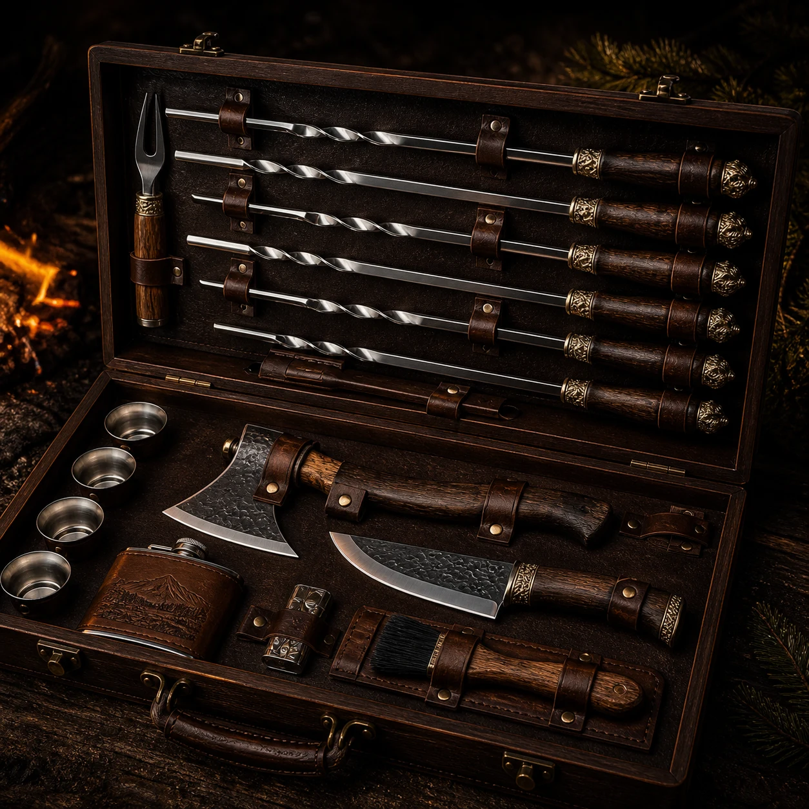

01
Охотничьи ножи
Мощные клинки с уверенным хватом, рассчитанные на полевые задачи и долгую службу.
Смотреть моделиПремиальный каталог для охоты, рыбалки и отдыха
Охотничьи клинки, рыболовные модели и подарочные наборы в кейсах. Для личного выезда, дачи, берега и подарка с характером.
Основные категории
В каталоге собраны четыре ключевых направления: охотничьи ножи, рыболовные модели, пикниковые наборы и шашлычные кейсы. Так проще сразу перейти к нужному сценарию, а не копаться в общей куче.
Мощные клинки с уверенным хватом, рассчитанные на полевые задачи и долгую службу.
Смотреть моделиТочные, легкие и удобные модели для разделки, лагеря и постоянного использования у воды.
Выбрать для рыбалкиКейсы с приборами, досками и аксессуарами, которые выглядят статусно и собирают компанию вокруг стола.
Посмотреть комплектыШампуры, ножи, топорики и аксессуары в деревянных или кожаных кейсах для подарка и дачи.
Собрать наборПодборки с упором на износостойкость, чистый рез и стабильную работу в полевых условиях.
Формы рукоятей и материалы подобраны так, чтобы инструмент уверенно лежал в руке даже в сырость.
Наборы оформлены так, чтобы их не нужно было доупаковывать перед вручением.
Оперативная обработка заказа, понятное сопровождение и помощь с подбором комплекта.
Хиты каталога

Охотничий нож с выразительным клинком и глубоким чехлом для регулярного выезда.

Более легкая геометрия, удобная рукоять и уверенная работа на рыбалке и в лагере.

Набор для пикника в жестком кейсе: нож, приборы, доска, бокалы и аксессуары.

Шампуры, нож, топорик и подача в кейсе, который смотрится достойно на подарок.
Охота, рыбалка, выезд
Для охоты важны уверенный рез, надежный хват и чехол, который спокойно выдерживает постоянный выезд. Для рыбалки важнее нержавеющая сталь, удобная геометрия и практичность у воды. Для подарка работают наборы в кейсах, где важен не только инструмент, но и подача.
Подарочные кейсы
Здесь выбирают не просто шампуры или нож, а готовый комплект для выезда, дачи, охоты или мужского подарка. Деревянные и кожаные кейсы, аккуратная комплектация и подача делают такие наборы сильной покупкой и для себя, и на подарок.
Выбрать подарочный кейсШампуры, нож, топорик, фляга и разделочные аксессуары в жестком деревянном кейсе для дачи, выезда и солидного подарка.
Комплект с посудой, приборами и аксессуарами для рыбалки, пикника и спокойного выезда на природу компанией.
Нож, чехол и дополнительные элементы в презентабельной подаче, когда нужен сильный мужской подарок с нормальным характером.
Доверие и цифры
Для этой тематики доверие строится не на громких обещаниях, а на понятных характеристиках, аккуратной подаче, повторных заказах и рекомендации после первой покупки.
Средняя оценка за качество клинков, аккуратную заточку, удобный хват и подачу в кейсе.
Подарочных и выездных комплектов собирают под частные заказы, корпоративные подарки и сезонные закупки.
Повторных обращений и рекомендаций дают те, кто уже заказывал ножи, шашлычные наборы или премиальные кейсы.
Вопросы
Собрали самые частые вопросы по доставке, составу наборов, срокам отправки и персонализации, чтобы перед заказом все было понятно без лишней переписки.
Да. Можно настроить состав, кейс, количество приборов и акцент на ножевой части в зависимости от бюджета и сценария использования.
Для подарочных наборов можно предусмотреть персонализацию: гравировку на клинке, табличке кейса или дополнительных аксессуарах.
Базовые позиции и хиты каталога обычно готовятся к отправке быстрее, а индивидуальные кейсы рассчитываются отдельно после согласования состава.
Заказ и подбор
Оставьте заявку, если нужен один нож, подарочный набор, шашлычный кейс или комплект под конкретный бюджет. Поможем выбрать состав, расскажем по стали, срокам отправки и вариантам оформления.